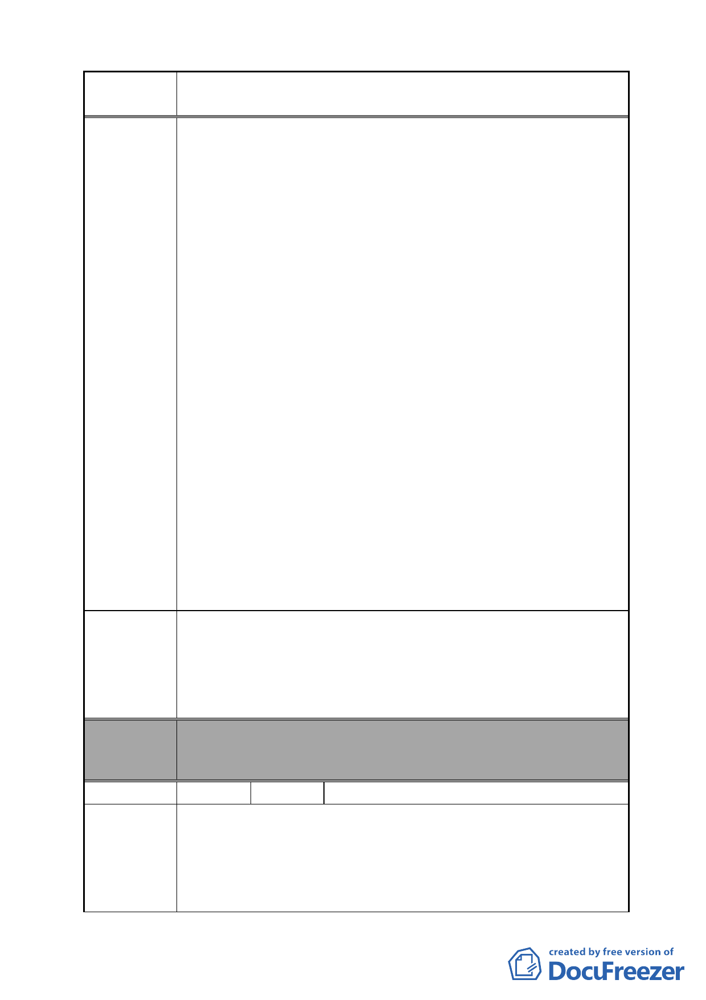

案 名 變更臺北市南港區鐵路地下化沿線土地主要計畫案
建議辦法
委員會
決議
地不納入本案跨區市地重劃範圍。....將 B-1 範圍內土地
（原屬回饋本府無償取得之道路用地與公園用地）與
B-2 範圍內土地（原屬臺灣鐵路管理局管有之策略型工
業區土地）進行交換）。」
2.經對照現行都市計畫案與旨揭公展草案內容，其草案回饋規
定已嚴重影響本局權益：「經初步計算南港調車場變更範
圍，如回饋道路用地、公園用地與交通用地，其回饋百分比
為 44.84%，參照『都市計畫工業區檢討變更審議規範』內
有關工業區變更為住宅區或商業區（包含自願捐贈土地及扣
除自願捐贈土地後，剩餘部分應再提供其中百分之 30 土地
作為區內必要之公共設施用地），如等級為第一級其回饋比
例分別是 37%及 40.5%。」故有關回饋部分顯然已經逾越法
定回饋標準，影響本局權益甚鉅」。
3.另公展案亦載明：「....另其土地上原屬臺灣鐵路管理局管有
地上物須由該局於本案細部計畫公告實施後 1 年內無條件自
行拆除處理，以配合跨區市地重劃開發時程」。且本局管有
之南港調車場範圍未納入市地重劃範圍內。衡酌「平均地權
條例」第 60 條第 3 項規定：「....折價抵付共同負擔之土地，
其合計面積以不超過各該重劃區總面積百分之 45 為限....。」
並以該公展草案內其他非屬本局土地應參加市地重劃之標
準比較，本局回饋百分比為 44.84%，再加上地上物拆除工
程經費再由本局自行負擔，更逾市地重劃之負擔標準（45%
為上限），明顯更加不合理。
故為維護本局管有資產之權益，臺北市政府應先行釐清有關
本局回饋之規定，並以回饋公共設施土地及本局自行負擔之
地上物拆遷工程經費（以可開發土地折算）不超過變更範圍
內可開發土地及公共設施用地之總和 45%上限為基準較為妥
適，且俟本局自行開發時再拆除地上物。
本案除文字誤繕應再作修正外，其餘依市府本次會議所送修
正計畫書內容通過。
編號
陳情理由
19 陳情人 黃清烈、胡寶蓮（附 118 位連署人）人
陳情土地座落台北市南港區南港段二小段地號 898 , 898-1 ,
899 , 899-1 , 900 , 901 , 902 , 903 , 904 , 905 , 907 , 907-1 , 910 ,
913 , 914 , 915 , 916 , 916-3 , 890-5 , 890-9 , 890-19 , 890-20 ,
894-3 , 896-3 , 789 等等之地號，是一大片的工二土地，也是鐵
路旁邊的土地，感激政府有在重視鐵路地下化後周邊的重大
- 31 -